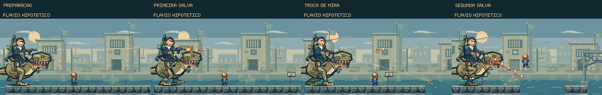
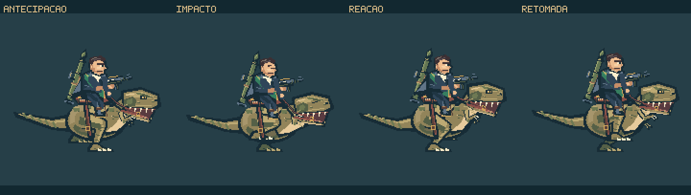
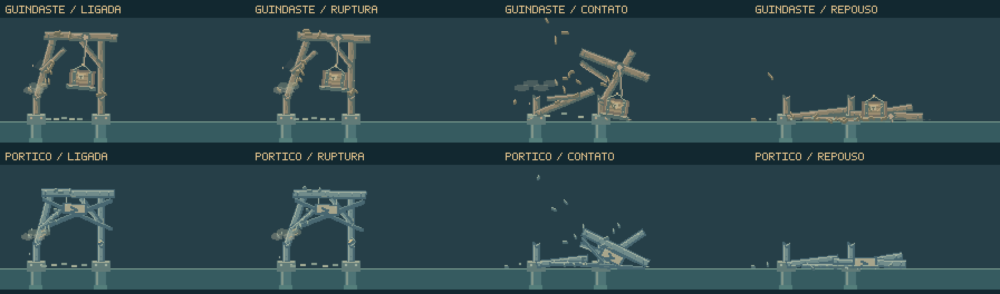

A ponte muda
durante a fuga.
Seis trechos ligam a aprendizagem inicial a uma saída sob pressão. O foguete derruba a estrutura à frente, a água invade a pista e o dinossauro salta entre as passarelas. Cada mudança pede uma decisão durante a corrida.
Jogar a perseguição → Rajadas e pressão do percurso ↓ · Impactos e movimento do dinossauro ↓ · Ver a composição em movimento ↓Mais pressão, com uma direção que pode ser lida.
A perseguição passa a programar nove rajadas, sete delas inclinadas para baixo. Cada uma tem quatro ou cinco disparos. As sequências finais ganham cadência, enquanto a postura e a arma anunciam a direção de cada ataque.

Aproximar ou saltar
A inclinação descendente se mantém durante os disparos. Aproximar-se abre espaço sob a trajetória, mas aumenta o risco de contato com o dinossauro. Saltar exige considerar a chegada dos tiros e o próximo apoio.
Cada sequência precisa caber
Novas rajadas ocupam os intervalos depois do pórtico, da água e da aterrissagem. O agendamento considera o aviso e a passagem do último tiro antes dos próximos eventos. Uma oportunidade atrasada expira sem encurtar a preparação.
São até quarenta tiros programados no percurso. Contrapesos, checkpoints e interrupções podem reduzir esse total. O equilíbrio foi tratado na revisão do código e da geometria; ainda não foi avaliado em partida nesta passagem.
O cenário cede; o corpo sente o impacto.

Cada material oferece resistência
Os apoios de madeira cedem antes das estruturas metálicas. A ruptura de cada encaixe conduz a reação do dinossauro, com uma breve perda de impulso e uma retomada contida.
Peças que chegam ao chão
Lascar, romper, cair e assentar são momentos distintos. As vigas tombam pelo canto que toca a margem; cabos e cargas conservam seus encaixes até a soltura. A poeira fica junto do impacto.
16,5 segundos de animação dirigida com os renderizadores do jogo. Posições e tempos preparados para autoria visual, sem simulação de partida. Os títulos aparecem somente na apresentação.

Os eventos ao longo da fuga.

Preparar, romper, atravessar.
15 segundos de composição dirigida. As posições foram preparadas para apresentar sprites e animações; este vídeo não é uma gravação de partida. Sequência: pórtico, água, salto do dinossauro e três encontros com patrulhas.
A destruição abre duas travessias
Os decks de carga se soltam em sequência e assentam nos apoios do canal. Suas bordas claras oferecem uma rota baixa; a passarela de manutenção mantém uma alternativa elevada. Depois da passagem do perseguidor, os pisos continuam se desfazendo.
A água tem uma origem e um fim
O mostrador sobe, a válvula vibra e as primeiras gotas escapam. O dinossauro alcança a conexão, a tampa se desprende e a crista corre pelo piso até o canal. O jogador pode saltar ou usar a passarela acima dela.
O peso aparece nos contatos.

Da tensão ao assentamento
O RPG fica apoiado antes de disparar. A chama inicial se apaga, a fumaça se desprende e as aletas abrem durante o voo. As vigas cedem pelas juntas e atingem a água com seus próprios respingos; os pisos amortecem nos grampos depois de alcançar os apoios.
Da impulsão à retomada
Os pés do dinossauro recolhem durante o voo e se estendem antes de chegar ao chão. A aterrissagem acontece em dois contatos, seguida pela reação do cavaleiro e pela retomada da corrida. A água também ganha continuidade: forma a crista, acelera e cai no canal.
Mais percurso, com mudanças de ritmo.
O mapa cresceu de 4.480 para 8.192 pixels. A distância até a saída corresponde a aproximadamente 38 segundos em corrida constante. Três checkpoints separam os principais blocos de aprendizagem e combinação.
| Trecho | O que muda | Decisão do jogador |
|---|---|---|
| Cais | Vãos, rajada alta seguida de baixa e guincho. | Aprender o salto, ler a arma e usar a carga para ganhar distância. |
| Carga | Batedor e investida entre andaimes. | Superar o inimigo e escolher a altura do percurso. |
| Pórtico | RPG, correntes rompidas, novos apoios e duas rajadas na saída. | Escolher a travessia e preparar a esquiva na margem seguinte. |
| Comportas | Reservatório sob pressão, frente de água e retomada dos tiros depois do canal. | Saltar a crista ou alcançar o contrapeso da rota alta; retomar a leitura da arma na saída. |
| Passarelas | Operador com carrinho, salto do perseguidor e duas rajadas descendentes. | Ler o objeto em movimento e coordenar os saltos com a chegada dos tiros. |
| Portaria | Batedor com salto, investida e rajadas combinadas. | Aplicar as esquivas aprendidas e alcançar o arsenal. |
Ação presa à anatomia e aos materiais.

Peso na preparação e na chegada
O dinossauro comprime as pernas antes de saltar. A cabeça e a cauda equilibram o voo, enquanto o cavaleiro absorve o movimento. A sombra permanece sob o corpo e a poeira nasce no contato com o piso.
Patrulhas feitas para a corrida
O batedor prepara uma investida curta e depois se recupera. A última variante acrescenta um salto. O operador segura uma carga por um cabo antes de soltá-la; o carrinho rola, colide e pode ser quebrado por cima.
O perigo precisa ser percebido.
As entradas do RPG, da água, do salto e das patrulhas têm intervalos reservados. A câmera olha mais adiante quando uma decisão se aproxima. A freada causada pelos contrapesos agora conserva uma vantagem de distância antes da retomada.
Os novos elementos usam postura, tensão dos cabos, movimento da válvula, materiais e bordas dos pisos. A perseguição mantém seu HUD compacto e não acrescenta instruções flutuantes como “PISE”, “ALTO” ou “BAIXO”.
A revisão incluiu inspeção de código e autoria visual. Por instrução do projeto, não houve testes, typecheck ou revisão no navegador. As imagens não comprovam o equilíbrio de dificuldade em uma partida.